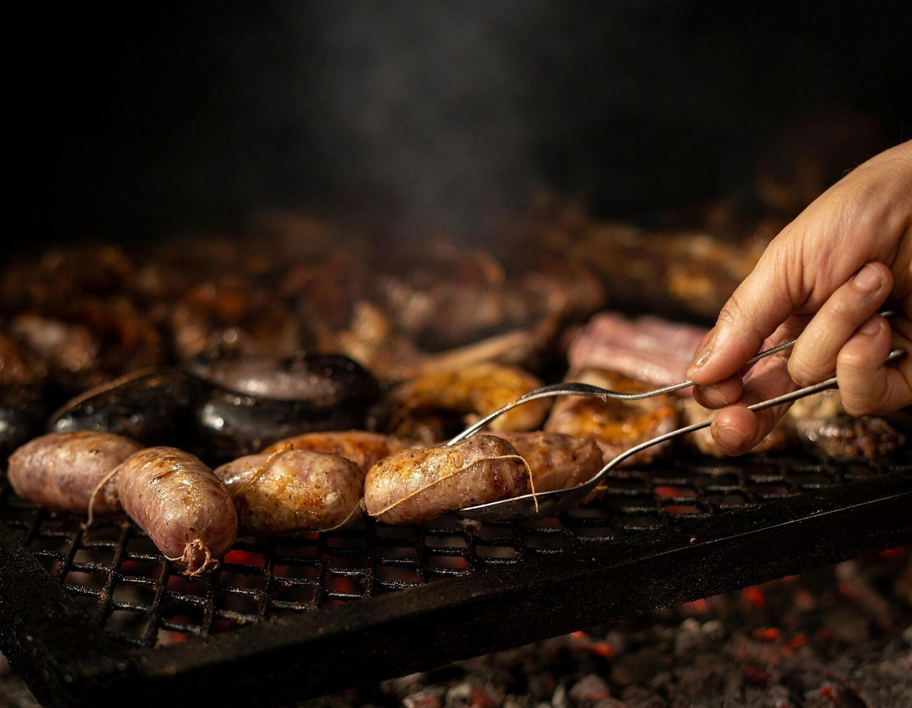
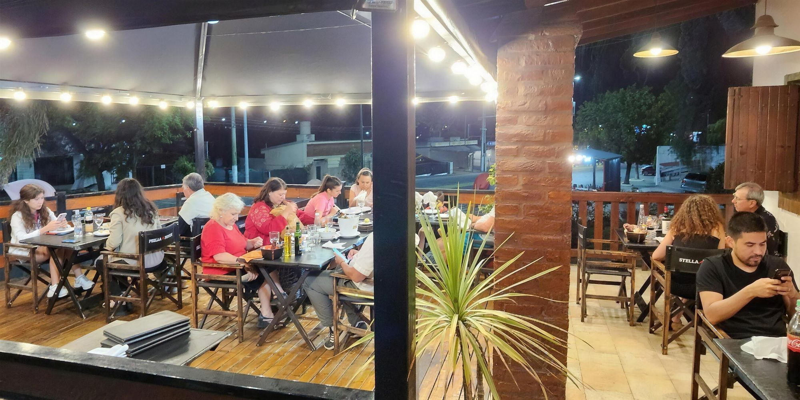
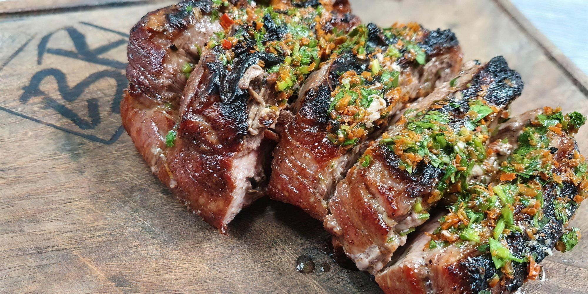
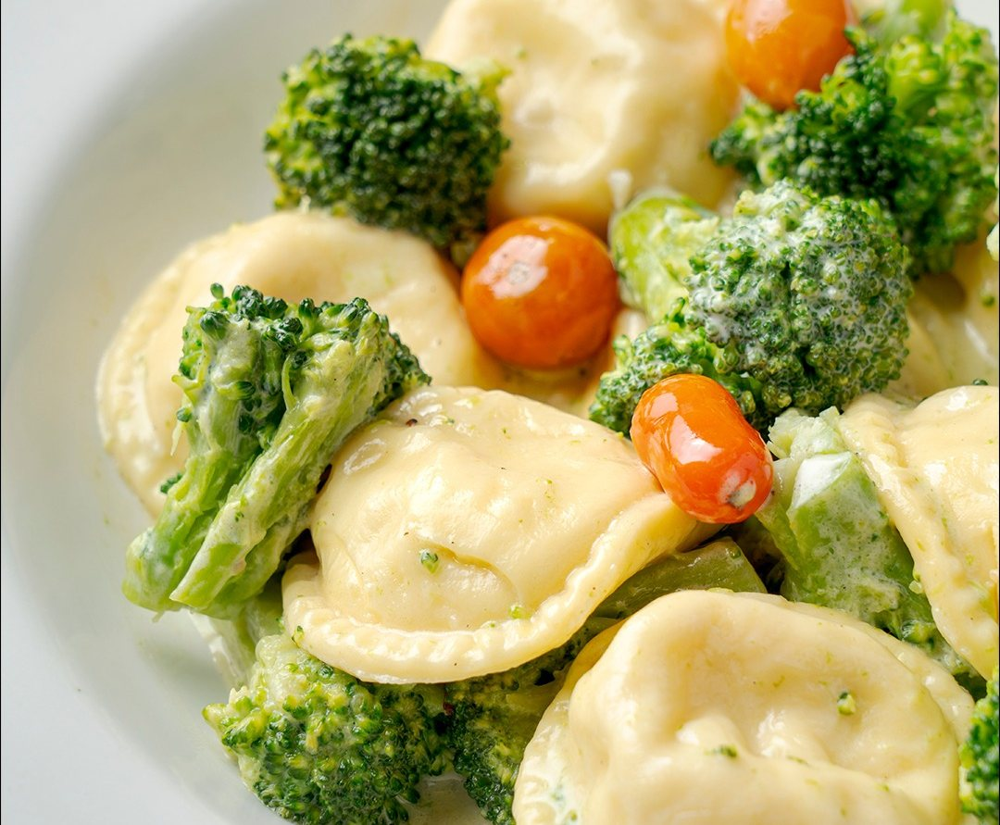
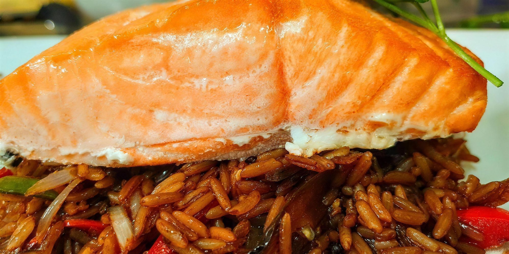
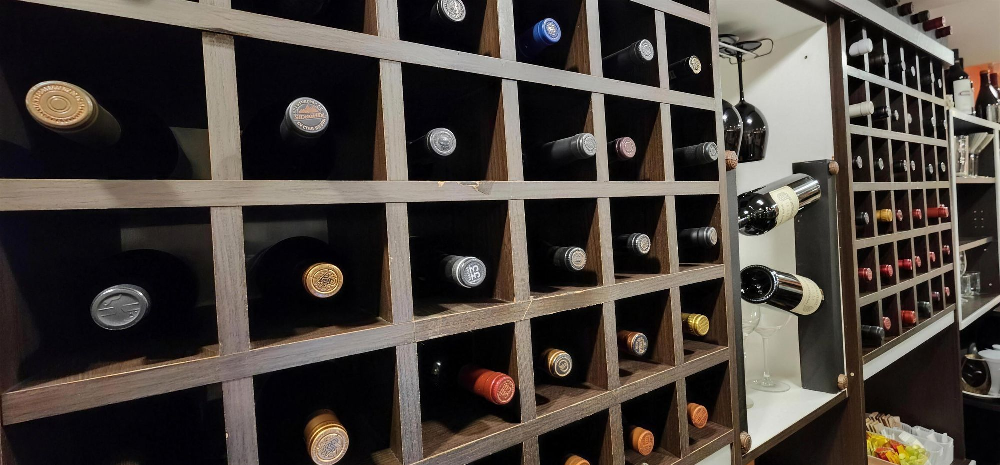

Restaurante en La Falda · desde 2015
Carnes a la leña, pastas de la casa y la bodega a la vista.
- Horarios
- Mediodía: todos los días, de 13 a 15 h
Noche: lunes a sábado, de 21 a 23 h - Dónde
- Av. España 1320, La Falda
Salón y deck al aire libre
Un salón con la cocina a la vista, y un deck para las noches de verano.
Somos lugar gourmet, delicatessen y boutique de vinos sobre avenida España. Desde el salón se ve la cocina: los chefs armando cada plato y el parrillero, atento al fuego desde temprano.
En la carta hay carnes a la leña, pastas totalmente caseras, trucha, salmón y risottos. Y la parrillada Blas de Rosales, que no te podés ir sin probar.
Si venís con tiempo, preguntá por el cabrito serrano: al horno con vegetales o a la leña.

La carta
Ver toda la carta en una páginaCalientes y frías
Bastoncitos de queso rebozadosRecomendado
Omelette
Solo queso · Jamón y queso · Champignones y queso
Empanadas criollas
Gambas al ajillo
Provoleta Blas de Rosales
Queso provolone, panceta y morrones
FlatbreadRecomendado
Pan chato saborizado, guarnecido con jamón crudo y vegetales
Jamón crudo, palmitos y salsa golf
Rabas
Con papas fritas
Langostinos apanados
Fish & ChipsRecomendado
Piezas de mar rebozadas con papas fritas
Tortilla para uno
Papas · Espinaca · Brócoli
Revuelto Gramajo
Armala a tu gusto
Elegí hasta 4 ingredientes
Tomate · Cebolla · Apio · Lechuga · Papa · Achicoria · Zanahoria · Rúcula · Remolacha
Adicionales con cargo: huevo duro, queso, atún, palmitos, tomates secos, champignon y palta.
Ensaladas especiales
Rúcula, parmesano y cherry
CantábricaRecomendado
Hojas verdes, tomates cherry, croutons, dados de queso y tiras de pollo
Tibia de vegetalesRecomendado
Grillados
Hojas verdes, apio roquefort y crutones
Salmón, hojas verdes, alcaparras y cherry
Sujeto a disponibilidad
Papas perejil y morrones asados
Crostinis
Tostaditas con ajo, lechuga, tomate y huevo duro
Ensalada del mar
Rúcula, palmitos, kanikama y tomate
Acompañamientos
Papas fritas
Bastón · Española · Rejillas
Papas fritas con huevos revueltos
Papas al natural
Papas a la crema
Papas especiales
Noisette · Bravas · Provenzal
Puré
Papas · Calabaza · Mixto
Puré rústico
Panceta y verdeo
Puré de manzanas
Timbal de arroz
Arroz, verdeo y crema
Espinacas a la crema
Calabacines grillados
Con manteca y azúcar negra
Tomate a la italiana
Grillados, gratinados con reggianito
Papas rellenas Ros
Con miel y ajo
Papas BlasRecomendado
Rellenas con manteca, queso, panceta tostada y cebollines
Huevos fritos
Mézclum
De vegetales, naranja y miel
Carnes, cerdo y pollo
Bife de chorizo al chimichurriRecomendado
Con papas bastón
Colita de cuadril marinada
Acompañada con vegetales · Para 2 personas
Entrecôte a la francesa
Crema amostazada al Chardonnay y hongos en guarnición de papas gratinadas
Entrecôte baconRecomendado
Con papas gratinadas
Lomo a la pimienta
Con papas a la crema
Lomo al champignon
Con papas noisette
Lomo al roquefort
Con papas rústicas
Lomo en Malbec y frutos rojosRecomendado
Lomo lardeado
Con papas a la criolla
Lomo RosRecomendado
Al provolone, con hojas verdes en guarnición de papas rellenas de ajo y miel
Lomo strogonoff
Con papas a la crema
Mollejitas
A la crema
Mollejitas al champagne
Con papas o arroz cremoso
Pollo al curryRecomendado
Con arroz salteado
Pollo deshuesado a la naranja
Con papas al natural
Pollo deshuesado al ajillo
Con papas a la gallega
Pollo deshuesado al champignon
Con papas españolas
Pollo mediterráneoRecomendado
Cherry, panceta, queso y champignones con papas gajo
Cerdo a la mostaza
Con papas noisette
Cerdo agridulce
Con mézclum de naranja a la miel
Cerdo laqueado
Con puré de manzanas
Costillitas de cerdo al whiskyRecomendado
Con timbal de arroz
Especialidades
Sujeto a disponibilidad
Chivito braseado con papas rústicasRecomendado
Paleta de chivito braseado, vegetales
Cordero al OportoRecomendado
Con higos y papas en gajo
Cazuela de mariscos
Filet de merluza a las finas hierbas
Merluza a la romana
Con puré
Merluza a las finas hierbas
Con papas noisette
Papillot de merluza
Cocción en paquete con roquefort y vegetales
Papillot de surubí
Cocción en paquete con roquefort y vegetales
Ranas a la provenzal
Con papas fritas
Roulade de merluza y espinacaRecomendado
Con vegetales
Salmón rosado BlasRecomendado
Grillado en guarnición de arroz salteado con verduras al wok
Salmón rosado grillado
Con papas gratinadass
Sopa de pescadoRecomendado
Pescado, fumet y vegetales
Trucha a la pimienta
Con papas gratinadass
Todos los lomos pueden cambiarse a entrecôte. Todas las carnes, pollos y pescados pueden ser simplemente grillados o a la leña.
Artesanales, de nuestros chefs.
Pastas
Crepes de mariscosRecomendado
En salsa rosa
Crepes de pollo
Champignon y verdeo
Ñoquis de papa
Panzotis
Rellenos de espinaca y seso
Sorrentinos
De espinacas y 4 quesos
SorrentinosRecomendado
De calabaza y queso
Sorrentinos
De jamón y queso
Sorrentinos
De salmón
Sorrentinos
De ricotta y nuez
Tallarines
Al huevo
Tallarines de remolachaRecomendado
Salsa recomendada: crema, jamón crudo y verdeo
Tallarines Di Mare
Frutos del mar a la crema o salsa de tomate
Salsas
Blas
Panceta, ciboulette, crema y almendras
Boloñesa
Roquefort, 4 quesos, pesto y crema de verdeo
Crema, rúcula y cherry
Brócoli
Crema y ajo
Reducción de Malbec
Con hongos
Scarparo
Jamón, fondue de tomate, panceta, crema, verdeo y albahaca
Carbonara
Ragout
Carne vacuna
Champignon
Di MareRecomendado
Frutos del mar a la crema o salsa de tomate
Risottos
Risotto con camarones
Arroz, vegetales, camarones y crema
Risotto de hongos
Risotto de vegetales
Risotto "Tony"Recomendado
Arroz, camarones, hongos y crema
Con papas fritas o ensalada mixta.
Milanesa de ternera
Milanesa napolitana
Milanesa al roquefort
Milanesa al provolone
Suprema de pollo
Suprema napolitana
Suprema al roquefort
Suprema al provolone
Milanesa de merluza
Milanesa de surubí
Para dos
Parrillada Blas de Rosales
Empanada criolla, provoleta, chorizo, morcilla, salchicha, chinchulín, molleja, costilla de cerdo, costilla, vacío, chivito; papas fritas con huevo revuelto y ensalada mixta.
Carnes asadas a la leña
Cabrito serranoRecomendado
Con empanada y papas fritas o ensalada mixta
Entraña
Bifecito de lomo
Plancha o leña
Entrecôte
Plancha o leña
Bife de chorizo
Plancha o leña
Tira de asado
Vacío
Costillas de cerdo
Matambre de cerdo
Al limón · Al roquefort
Churrasquito de cerdo
Plancha o leña
Achuras
Tabla de achuras
Chorizo, morcilla, salchicha, chinchulín y mollejas
Molleja
Chinchulín
Salchicha parrillera
Chorizo o morcilla
Parrillada completa
Parrillada clásica para dos
Chorizo, morcilla, chinchulín, costilla, vacío, costilla de cerdo
Parrillada clásica para uno
Chorizo, morcilla, chinchulín, costilla, vacío, costilla de cerdo
Parrillada de vegetales
Postres
Panqueque
Crema chantilly, dulce de leche y nueces
Panqueque
Helado, frutos rojos y crema chantilly
Panqueque
Helado, dulce de leche y salsa de chocolate
Panqueque
Dulce de leche con baño de chocolate
Panqueque
Dulce de leche y crema
Tiramisú
Crème brûlée
Brownie con helado
Frutas en almíbar
Con crema o queso Tybo o cremoso
Crepe
De dulce de leche flambeado
Batata o membrillo
Con queso Tybo o fresco
Copa tentaciónRecomendado
Helado de vainilla, Irish Cream, Marroc y crema chantilly
Copa Blas de RosalesRecomendado
Helado, Irish Cream, almendras y crema chantilly
Helado
1 bocha · 2 bochas · 3 bochas
Tortilla de manzana
Panqueque con manzana flambeada al rhum
Flan casero
Con caramelo, crema y dulce de leche
Don Pedro
Helado, whisky, nueces y crema chantilly
Copa chocolate
Helado de chocolate, licor de chocolate y chantilly
Copa Figs & Cream
Crema americana, higos, crema chantilly, chocolate y nueces
Lemon Ice
Helado de limón con champagne
Bombón escocés, suizo o almendrado
Copa de Nutella y Oreo
Mixtura de frutas
Sola o con helado
Cafetería
Adicional crema
Café o cortado pocillo
Café o cortado jarrito
Té clásico, hierbas y saborizados
Tés Inti Zen
Café Blas de Rosales
Leche condensada, café, coñac, canela, chocolate
Cappuccino | Irlandés | Caribeño | Francés
Alta gama, de autor y recomendados
Finca La Linda
Malbec · Cabernet Sauvignon
Finca Las Perdices
Malbec · Cabernet Sauvignon · Malbec por copa
El Potrillo Salentein
Malbec · Pinot Noir · Dulce Natural
Killka Salentein
Red Blend
Callia Salentein
Malbec · Chardonnay
Salentein Reserve Salentein
Malbec · Cabernet Sauvignon
Saint Felicien Catena Zapata
Malbec · Cabernet Franc
D.V. Catena Catena Zapata
Malbec-Malbec · Cabernet-Malbec
Nicasia Vineyards Catena Zapata
Red Blend Malbec · Red Blend Cabernet Franc
Alamos Catena Zapata
Malbec · Cabernet Sauvignon · Pinot Noir · Espumante Extra Brut / Brut Rosé
Elementos El Esteco
Malbec · Tannat · Elementos 3/8
Don David El Esteco
Malbec
Luigi Bosca
Malbec · Espumante Brut Nature
Rutini Rutini
Malbec-Malbec · Cabernet-Malbec
Trumpeter Rutini
Malbec
Reto Vicentin Family Wines
Malbec orgánico y blend
Bodegas clásicas
Norton
Malbec · Cabernet Sauvignon · Chardonnay · Sauvignon Blanc
Varietales especiales Norton
Mil Rosas · Cosecha Tardía (blanco o tinto)
San Felipe La Rural
Caramañola Blanco · San Felipe Caramañola Blanco 3/8 · Caramañola Tinto · San Felipe Caramañola Tinto 3/8
Etchart Privado Etchart
Torrontés
Cafayate Etchart
Malbec · Cabernet Sauvignon
Alaris Trapiche
Malbec · Cabernet Sauvignon · Sauvignon Blanc
Chandon
Castel Chandon Blanco · Valmont Tinto
Latitud 33° Chandon
Malbec · Cabernet Sauvignon · Sauvignon Blanc
Alma Mora Finca Las Moras
Malbec · Cabernet Sauvignon · Chardonnay
DADA Finca Las Moras
Varietales
Nieto Senetiner Nieto Senetiner
Malbec · Cabernet Sauvignon
Benjamín Nieto Senetiner Nieto Senetiner
Malbec · Cabernet Sauvignon · Chardonnay
Santa Julia
Malbec · Cabernet Sauvignon · Syrah · Tempranillo · Chardonnay · Sauvignon Blanc
Especiales Santa Julia
Chenin Dulce Natural · Dulce Tinto
Uxmal Catena Zapata
Red Blend Malbec · Sauvignon Blanc-Sémillon
“El vino es el abrazo de las palabras, en su justa medida…”
Bebidas sin alcohol
Agua mineral con o sin gas 500 cc
Gaseosas 330 cc (línea Coca-Cola)
Gaseosas lata 350 cc (línea Coca-Cola)
Saborizadas 500 cc (línea Coca-Cola)
Jugo de naranja
Jarra de limonada
Cervezas
Stella Artois 330 cc (rubia o negra)
Stella Artois 1000 cc
Andes 473 cc
Andes 1000 cc
Corona 750 cc
Corona 330 cc
Tragos
Gancia con limón
Gin tonic
Campari con naranja
Fernet con coca
Espirituosas
Baileys
Tía María
Reserva San Juan
Cointreau
Beefeater
Absolut
Havana Club
Whiskies importados
Espumantes
Luigi Bosca
Alamos
Salentein
Chandon
Baron B
Chandon 187
Las Perdices
Uxmal
Reservá tu mesa y te confirmamos por WhatsApp.
Elegí el día, la hora y cuántos son. La página arma el mensaje y nosotros te respondemos por el mismo chat.
GruposSi son más de 8, contanos en las aclaraciones y armamos la mesa.
Para llevarElegí de la carta y llamá al 03548 15-632624. Lo retirás por nuestra cocina.



